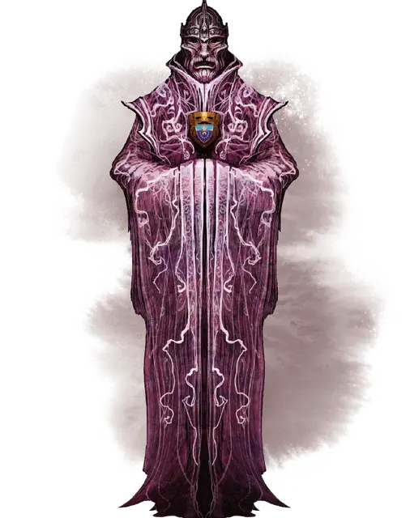

Комплект одежды Лорда
Lord’s Ensemble
Чудесный предмет, очень редкий (требуется настройка Гуманоидом)

Рекомендованная стоимость 5 001-50 000 зм
Тайные Лорды Глубоководья облачаются в этот комплект одежды при встрече друг с другом. Благодаря одеянию, каждый лорд становится неотличим от других. Комплект состоит из трёх элементов: шлема, амулета и мантии – если надевать вместе, они считаются единым магическим предметом, но только в пределах Глубоководья и её канализации.
Вы настраиваетесь на комплект как на единственный предмет.
Шлем Лорда. Этот крупный шлем прикрывает вашу голову и скрывает лицо. Благодаря глазницам в шлеме ваша личность останется загадкой, но при этом вы можете хорошо видеть. Пока шлем надет, ваш голос магическим образом звучит так, что невозможно определить пол, и вы становитесь невосприимчивым к магии, позволяющей другим существам: читать ваши мысли, определять правдивость ваших слов, мировоззрение или ваш тип существа. Существа могут телепатически общаться с вами только с вашего позволения.
Амулет Лорда. На амулет нанесён герб Глубоководья. Он действует подобно амулету защиты от обнаружения и поиска [amulet of proof against detection and location].
Мантия Лорда. Изысканная мантия, действующая как кольцо свободных действий [ring of free action], создающая иллюзию того, что вы неопределенный, лишенный явных половых признаков гуманоид ростом в 6 футов.